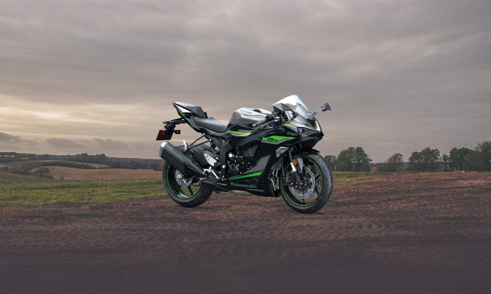

Kawasaki Ninja ZX-6R
A Ninja ZX-6R é equipada com o exclusivo sistema ABS KIBS (antitravamento inteligente de frenagem), e pinças monobloco de montagem radial, poderosas e altamente rígidas e discos frontais em aço inoxidável de 310 mm semiflutuantes, de diâmetro grande, que conferem alto poder de frenagem.
R$75.190,00